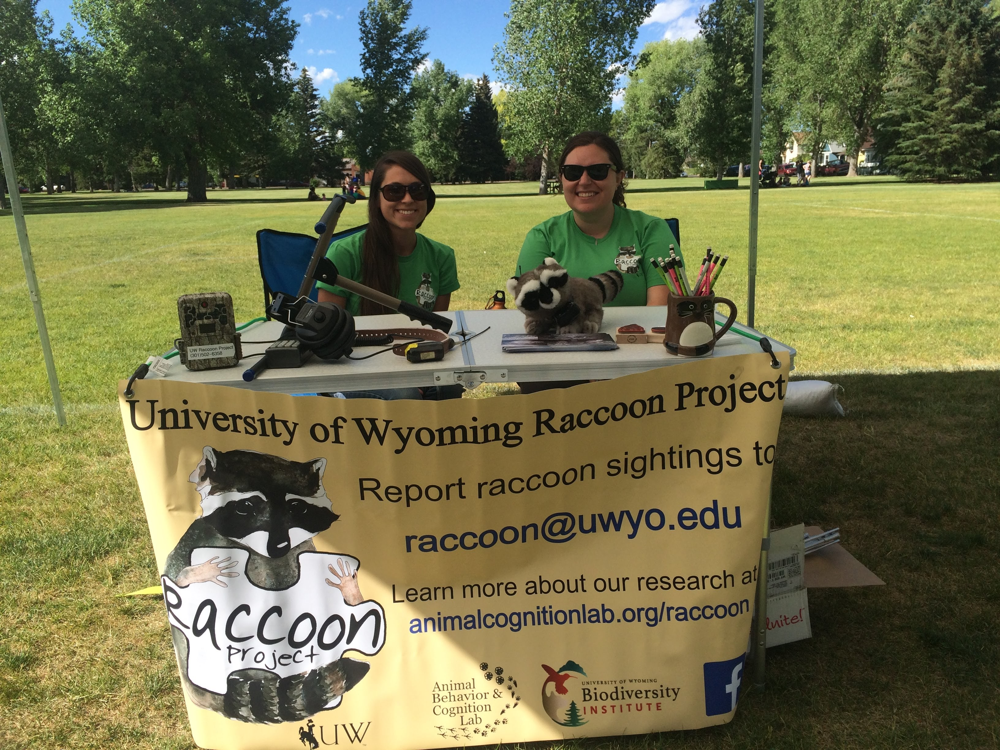
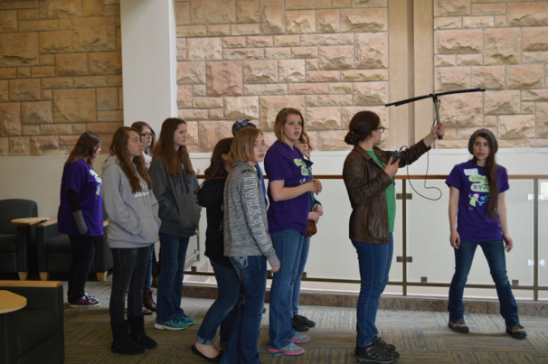

OUTREACH
Co-presented lesson plans on animal behavior and cognition and led hands-on activities for students in grades ranging from pre-school to high school:
Wyoming State Science Fair (2016, 2017, 2018)
Women in STEM (2016, 2017, 2018)
Albany County Public Library (2015, 2016, 2017, 2018)
East High School, Sophomore Biology. Cheyenne, WY. (2017)
Laramie High School, AP Biology. Laramie, WY. (2017)
Beitel Elementary School. Laramie, WY. (2015)
Organized a booth at a local farmer’s market in Laramie, WY, to engage with the public and discuss the University of Wyoming Raccoon Project’s research goals:
Thursday Local Farmer’s Market (2015, 2016, 2017)
Public presentation on the University of Wyoming Raccoon Project (UWRP) and how to participate in UWRP community-science opportunities
Izaak Walton League- Laramie Chapter (20-April-2017)
| Thursday Local Farmer’s Market | Radio Telemetry at UW Women in STEM Event | Talking about raccoons with a library youth group |
|---|---|---|
|  |  |  |
MEDIA COVERAGE
Interviews discussing the University of Wyoming Raccoon Project research:
Right to Roam Podcast. Episode 50: Trash Pandas and Polecats. Affectionately of Course! Aired 29-Nov-2019.
HumaNature Podcast. Episode 32: Trash Bandits And Border Collies. Aired 5-Dec-2019.
Open Spaces. From Pests To Puzzle Solvers, Scientists Study Laramie’s Raccoons. Aired 16-Sep-2016 on Wyoming Public Radio.
Page created by Rachel E. Fanelli